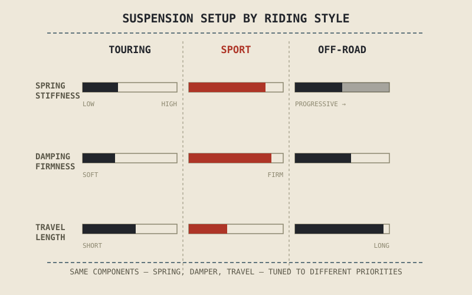

A touring bike loaded with luggage, a sportbike carrying a rider braking hard into a corner, and a dirt bike launching off a rock ledge all ask their suspension to do fundamentally different jobs — yet the hardware doing those jobs is built from exactly the same ingredients this part has already covered: a spring, a damper, a sag setting, some amount of travel. This chapter is where those ingredients finally get combined differently on purpose, matched to what each style of riding actually demands.
The Same Parts, Different Priorities
Every setup decision covered in this part — spring rate from Chapter 5.2, damping character from Chapter 5.3, sag from Chapter 5.4, the amount of travel from Chapter 5.5 — involves a trade-off, not a single correct answer. A stiffer spring resists bottoming but transmits more of a small bump; more travel absorbs bigger hits but raises the bike and softens its steering precision; firmer damping controls chassis motion under hard braking but can make a small ripple feel harsher than it needs to. None of these trade-offs disappear when a manufacturer or a rider tunes a motorcycle for touring, sport, or off-road use — they're simply resolved in a different direction, because the riding each style involves stresses the suspension in a different way.
Touring: Comfort and Load Absorption
A touring motorcycle spends most of its life carrying more than just the rider — a passenger, luggage, sometimes both — over long distances on surfaces that are rarely perfectly smooth. That combination pushes touring suspension setup toward comfort and load capacity ahead of outright precision: softer springs and gentler damping absorb small road imperfections without transmitting them to the rider over hours in the saddle, while enough travel and enough spring preload capacity handles the added weight of a passenger and luggage without sitting deep in its stroke, closer to bottoming, before the ride even starts. The sag procedure from Chapter 5.4 matters especially here, since a touring bike's laden weight changes so much between riding solo and riding two-up with bags — setup that's correct empty can be badly wrong once loaded.
Sport: Precision Under Hard Load
A sportbike ridden hard asks the opposite question: not how to absorb a long day of small bumps, but how to keep the tyre's contact patch precisely planted through hard braking, aggressive cornering, and hard acceleration, often within the same few seconds. That demands firmer springs and more assertive damping — control that resists excessive dive under braking and squat under acceleration, at the direct cost of transmitting more of the road's smaller texture to the rider. Travel tends to be shorter than a touring bike's, trading impact absorption for the quicker, more precise wheel control and sharper steering geometry that fast cornering rewards. This is comfort deliberately sacrificed for the contact-patch precision Chapter 5.1 identified as suspension's core job — sport setup simply weights that job differently than touring setup does.
Touring, sport, and off-road suspension aren't three different technologies — they're the same spring-and-damper toolkit from this part, tuned toward whichever trade-off that style of riding actually rewards.
Off-Road: Absorbing the Unpredictable
Off-road riding removes the relatively predictable, repeated-surface assumption both touring and sport riding share, replacing it with sudden, large, and unpredictable inputs — rocks, ruts, drops, and landings that can ask for the suspension's entire travel in a fraction of a second. That demands the longest travel of the three categories by a wide margin, paired with springs and damping tuned to resist harsh bottoming on a big hit while still controlling the wheel enough to stay tracking the ground between smaller ones. Off-road setups tend to run softer through the early part of their travel than a sportbike's, then rely on a progressive spring rate or increasingly firm damping — concepts Chapter 5.2 and Chapter 5.3 both introduced — to build resistance steeply as the suspension nears the end of that long stroke, precisely to absorb the rare, severe hit without the harsh clunk of running out of travel entirely.

Three motorcycle suspension setups — touring, sport, and off-road — shown side by side with their relative spring stiffness, damping firmness, and travel length compared on simple labeled scales.
A Common Misconception, Cleared Up Early
It's tempting to assume one of these three setups is simply "better" suspension than the others — that a sportbike's firm, precise setup is an upgrade over a touring bike's soft one, or that off-road's long travel is what every suspension would use if cost were no object. None of that is true. Each setup is a correct answer to a different question, and fitting the wrong one to the wrong riding style doesn't produce better suspension — it produces worse suspension for that use, however impressive the hardware looks on a spec sheet. A sportbike's firm sport suspension bolted onto a heavily loaded touring bike would batter its rider over a long day; a touring bike's soft, long-travel comfort setup bolted onto a sportbike would wallow and bottom under hard cornering loads.
Where This Leads
Springs, damping, sag, travel, construction, adjustment, sprung-versus-unsprung mass, and now how all of it gets matched to touring, sport, and off-road riding — Part V has now covered how suspension works and how it's tuned. Chapter 5.11 closes the part by placing suspension back into the whole motorcycle, showing how it interacts with the chassis, tyres, and rider input this book has already covered and will cover next.
Key Concepts to Remember
- Touring, sport, and off-road suspension all use the same spring-and-damper fundamentals from this part; they differ in how those trade-offs are resolved, not in the underlying technology.
- Touring setup favors comfort and load capacity — softer springs, gentler damping, and enough capacity for a passenger and luggage — often prioritized over outright precision.
- Sport setup favors precision under hard braking, cornering, and acceleration — firmer springs and more assertive damping, at the cost of transmitting more small-bump harshness.
- Off-road setup favors long travel and progressive resistance, absorbing large, unpredictable hits without harsh bottoming while still tracking the ground between them.
Cross-References
| ← Ch. 5.1 | Established contact-patch tracking as suspension's core priority; this chapter shows that priority being resolved differently across touring, sport, and off-road riding. |
| ← Ch. 5.4 | Introduced sag as the setup foundation this chapter shows changing significantly with a touring bike's passenger and luggage load. |
| ← Ch. 5.9 | Explained sprung versus unsprung mass, a factor that shapes suspension behavior across all three riding styles discussed here. |
| → Ch. 5.11 | Closes Part V by placing suspension back into the whole motorcycle system. (Not yet published.) |